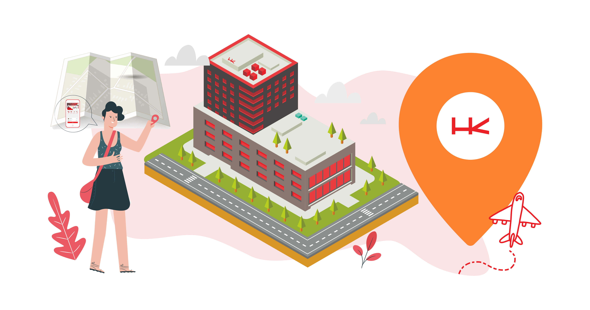

<ion-content class="ion-padding">
  <h1 style="line-height: 0px; font-weight: 700;">Location access</h1>
  <h1 style="font-weight: 700;">needed</h1>

  <ion-text>
    Diperlukan akses lokasi anda untuk melakukan absen dari perangkat mobile. Ini mendeteksi apakah anda berada didalam
    area hk tower.
  </ion-text>
  
</ion-content>

<ion-footer class="ion-padding ion-no-border ion-no-shadow">
  <ion-button color="hk-red" expand="full" (click)="OpenSettings()">Allow Location Access</ion-button>
</ion-footer>